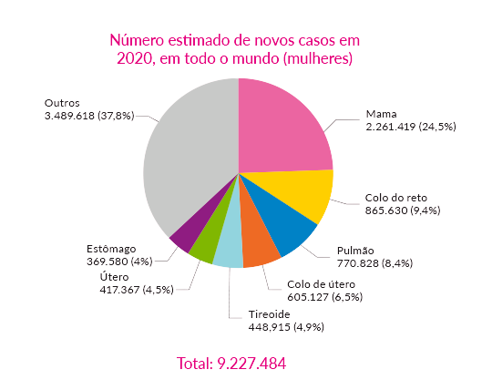
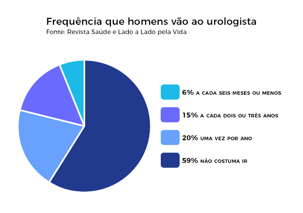

Outubro Rosa é uma campanha de conscientização que tem como objetivo principal alertar as mulheres e a sociedade sobre a importância da prevenção e do diagnóstico precoce do câncer de mama e mais recentemente sobre o câncer de colo do útero.
ESTIMATIVAS DE NOVOS CASOS DE CÂNCER DE MAMA (2020 - INCA). É O CÂNCER MAIS COMUM ENTRE AS MULHERES.
Identificação precoce de doenças aumenta as chances de um tratamento eficaz. Por isso, alguns exames devem fazer parte da rotina dos homens. “É preciso prestar atenção no corpo e ficar atento aos sinais que ele envia. O cuidado deve ser diário.
A identificação precoce de doenças aumenta as chances de um tratamento eficaz. Por isso, alguns exames devem fazer parte da rotina dos homens. “É preciso prestar atenção no corpo e ficar atento aos sinais que ele envia. O cuidado deve ser diário.